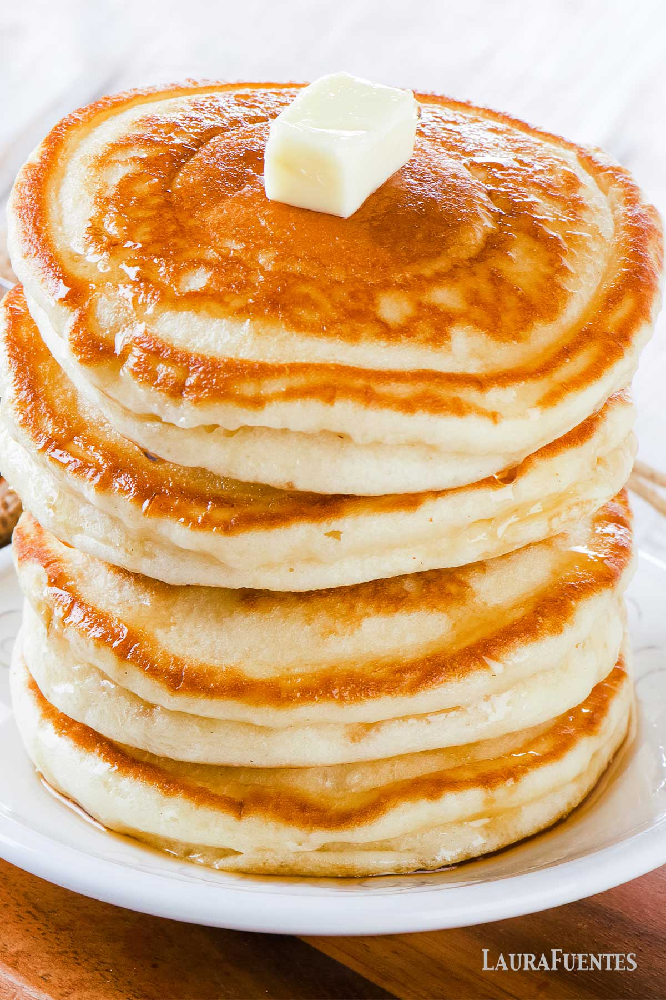

Good-for-you Pancakes

The following makes about 3 super large pancakes
They look pretty delicious in the picture. Hopefully this will finally be that one go-to, easy-to-make meal you've been looking for.
This recipe is sourced from here.
Ingredients
- 1/2 cup of oats = 153 calories
- Carbs = 28 g
- Protein = 11 g
- Fats = 2.5 g
-
1 cup of low fat cottage cheese = 180 calories
- Carbs = 8 g (4 g of sugar)
- Protein = 26 g
- Fats = 5 g
-
4 eggs = 284 calories
- Carbs = 0 g
- Protein = 24 g
- Fats = 20 g
- 1 Teaspoon of Vanilla Extract
Steps
- Blend it all together.
- Pour in a pan to cook (Spray/pour olive oil if you want to up the calories, make it taste better, or don't want it to stick.).
The texture should be just like any other normal pancake.